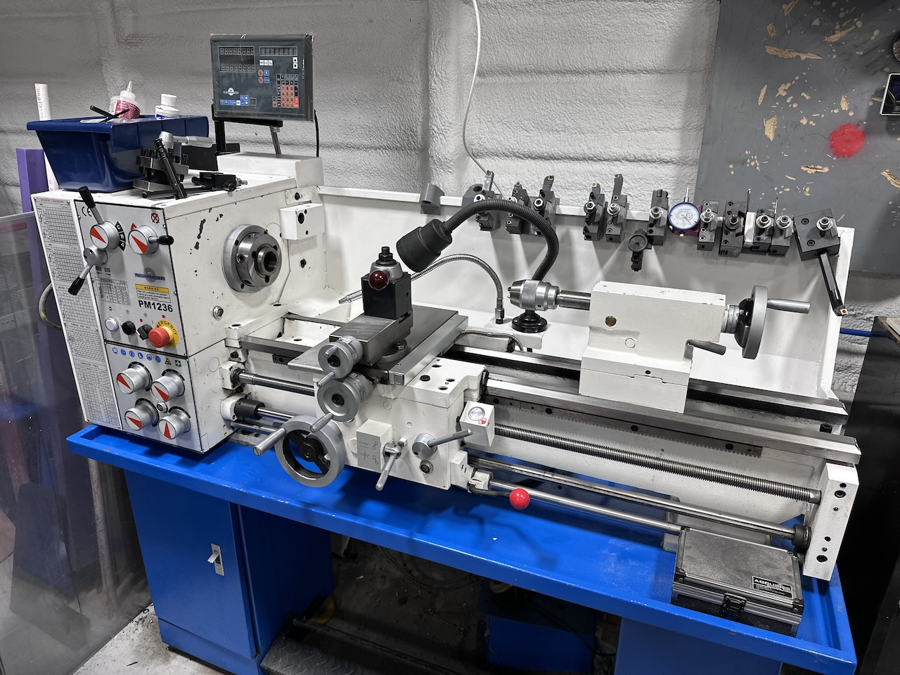
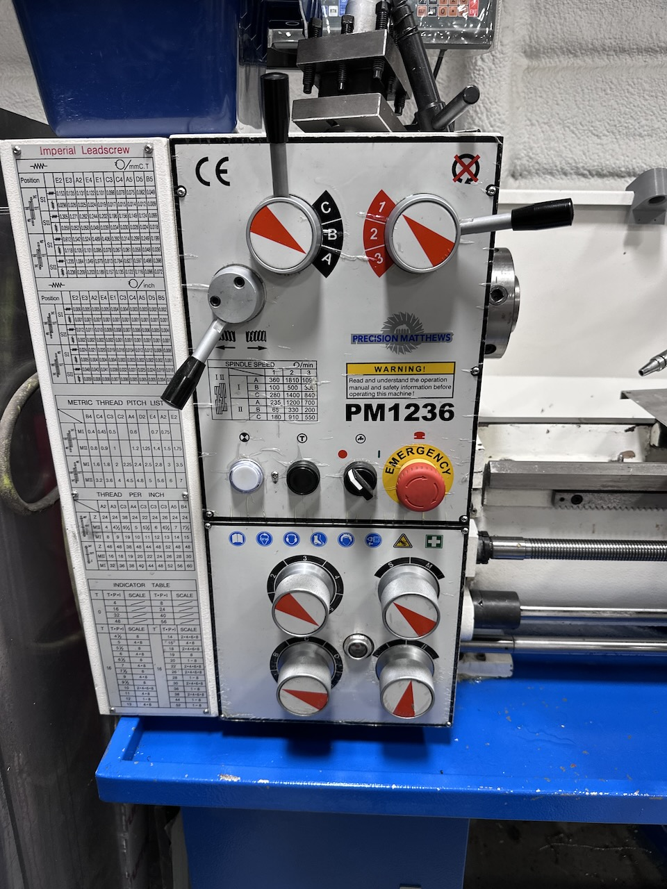

Precision Matthews PM-1236 12”×36” Geared-Head Lathe — Preferred Package — SOLD
$5,200


Description
Up for sale is a Precision Matthews PM-1236 12”×36” geared-head lathe in the Preferred Package configuration — well-maintained, excellent condition, and ready to work. Everything you need to start turning from day one is included: 2-axis DRO, multiple chucks, quick-change tool post, steady and follow rests, coolant system, and more. A significant savings over new.
What’s Included
- ✓ Precision Matthews PM-1236 geared-head lathe
- ✓ Welded steel stand with chip pan
- ✓ 2-axis digital readout (DRO)
- ✓ 6” chuck with various jaw configurations
- ✓ 8” chuck with various jaw configurations
- ✓ 10” faceplate
- ✓ Steady rest and follow rest
- ✓ Quick-change tool post set with 5 holders
- ✓ Micrometer carriage stop
- ✓ Foot brake
- ✓ Coolant system
- ✓ LED work light
- ✓ Thread chasing dial
- ✓ Dead centers
Specifications
| Swing over bed | 12” |
| Distance between centers | 36” |
| Headstock | Geared-head |
| Approximate weight | 1,250 lbs |
| Condition | Excellent — normal light use |
Condition
Excellent — normal light use, clean ways, all systems fully operational.
- Clean ways — normal light use
- Spindle, carriage, cross-slide, and tailstock all function correctly
- Threading and DRO fully operational
- Coolant system and LED lighting operational
- All included accessories present and in good condition
Local pickup only. This machine weighs approximately 1,250 lbs — we have a tractor with forks available to assist with loading at your direction. See our Pickup & Loading page for full details.